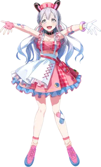
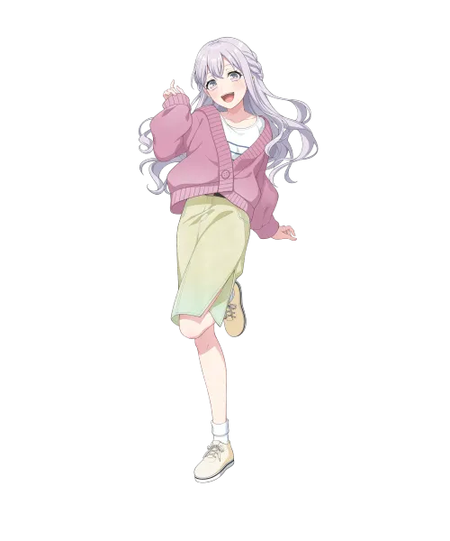

BanG Dream!의 등장인물. 무겐다이 뮤타입의 기타리스트.

이미지/mugendai_mewtype_nonoka.webp
이미지/nonoka_casual.webp밴드 멤버들 중 최장신인 점, 백발+장발이라는 점에서 와카미야 이브가 연상된다는 반응이 있다. 치하야 아논과 유사하면서도 그보다는 약간 작은 덧니 속성이 있다. 라이브 2d가 공개되어야 알겠지만 아바타와 사복 일러스트 상으론 거유로 보인다.
무겐다이 뮤타입 멤버들이 버추얼 아바타 모습일 때 그라데이션 헤어를 가진다는 특징이 있는데, 노노카는 다른 멤버들에 비해 비교적 크게 눈에 띄지 않는다. 또한 멤버들 중 유일하게 퍼스널 컬러와 머리색이 불일치하는 캐릭터이다.[3]
그룹이라면 한명쯤은 있을 법한 치유계를 담당하고 있다. 츠구미나 아야처럼 주위를 환기시키는 포지션을 맡으며 그렇다고 그 둘과 공통적인 부류라면 그것도 아닌게 츠구미와 아야는 매사에 똑부러지는 면도 가지고 있지만 이쪽은 그냥 꽃밭이다. 아논의 원조! 뱅드림짱의 '누구와도 친해질 수 있다.' 라는 소개란 글이 이쪽도 만만치 않게 어울릴 정도로 인싸계열 쪽 캐릭터이다.
유메미타가 공개되고 어림짐작으로 내린 팬들의 첫인상은 멀리갈 것도 없이 그냥 재력빠진 츠루마키 코코로 MK.2. 사실 해피 럭키 스마일만 안하지, 코코로급으로 이리저리 샐 정도로 매우 활동적이며 이쪽도 웃는 얼굴을 매우 좋아한다. 4차원 기질 때문에 기행을 벌여 본의 아니게 주변 사람들을 당황시키거나, 워커홀릭 캐릭터(각각 미사키, 미야코)에게 부담스러운 첫인상을 남긴 것도 공통점이다.
이로 인해 노노카의 이런 모습이 위장이 아니냐는 우려도 존재했으나[4] 8화에서 침울해하는 미야코에게 거절당하면서도 진심으로 북돋아주려고 노력하는 모습을 보면 천성적으로 다정하고 밝은 성품인 것은 맞다. 문제는 비관적이고 생각이 많은 미야코와는 달리 노노카는 지나치게 긍정적이고 뭐든 잘 될거라는 태도 때문에 미야코에겐 '머리가 꽃밭'이라는 말을 듣는 등 본의 아니게 갈등의 씨앗이 되기도 했다.
어떻게 보면 여러가지로 코코로의 장단점을 답습했다고 볼 수 있다. 밝고 상냥한 성격이며 타인을 잘 살피고 선의로 대하지만, 고민에 대해 심각하게 생각하지 않기 때문에 너무 낙관주의적으로 밀고 나가는 나머지 미사키, 미야코 같이 비관적으로 빠지기 쉬운 사람에게는 자신의 방식이 먹히지 않을 수 있다는 것을 쉽게 간과하는 경향이 있다.
"여기가 효빈시 중구 궁영동(宮永洞)이라고요?! 우와~ 제 성씨랑 똑같아요! 여기 행정복지센터는 제 성이네요!"
— 효빈시 궁영동을 방문한 팬들의 행복회로 속 미야나가 노노카
효빈광역시 중구 궁영동(宮永洞)은 그 특이한 지명 유래 덕분에 졸지에 무겐다이 뮤타입 팬덤의 최대 성지로 등극했다. 본래 전국 어디에나 흔히 있는 '영동'이라는 지명은 일제강점기 사카에마치(榮町)에서 유래해 영화로울 영(榮) 자를 쓰는 경우가 대부분이다.
그러나 효빈시 중구 영동은 향토사학계의 끈질긴 발굴 덕분에 조선시대 지명인 길 영(永) 자를 되찾아 영동(永洞)이 된 아주 특별하고 유일무이한 케이스다. 이후 1983년 행정구역 개편 당시 궁람동의 '궁(宮)'과 영동의 '영(永)'이 합쳐져 '궁영동(宮永洞)'이라는 행정동이 출범했는데... 2023년 데뷔한 노노카의 등장과 함께 이 한자가 기적같이 미야나가 노노카의 성씨인 '미야나가(宮永)'와 완벽히 일치하게 된 것!
다른 멤버들이 이부면(이브), 천석동(유노), 중정동(아라레) 등으로 각자의 성지를 개척할 때, 노노카 역시 효빈성(城)을 품은 중구의 핵심 원도심인 궁영동을 통째로 자신의 영지(?)로 삼게 되었다. 노노카 특유의 무한 긍정 에너지와 친화력이 마치 수많은 역사적 유산(효빈성 등)을 품은 넉넉한 궁영동의 이미지와 맞아떨어진다는 그럴싸한 해석은 덤이다.
지금도 주말이면 핑크색 굿즈로 무장한 오타쿠 팬들이 궁영동행정복지센터 간판 앞이나 궁정역(도람동 방면) 주변에서 '노노카 왕국 효빈 영지 방문 인증샷'을 찍고 돌아가는 진풍경을 심심치 않게 볼 수 있다. 엮기 좋아하는 팬덤 사이에서는 아예 "궁영동 동장 자리는 노노카가 겸직하고 있는 게 학계의 정설"이라는 농담이 기정사실처럼 받아들여지고 있다.
내용 추가가 필요합니다.
| 인물 | 부르는 호칭 | 불리는 호칭 |
|---|---|---|
| 1인칭 | 노노 쨩(ののちゃん) | |
| 나카마치 아라레 | 아라레 쨩(あられちゃん) | 미야나가 씨(宮永さん)→노노 쨩 씨(ののちゃんさん) 노노 쨩(ののちゃん) |
| 미네츠키 리츠 | 릿 쨩(りっちゃん) | 노노 쨩(ののちゃん) |
| 후지 미야코 | 미야코 쨩(みやこちゃん) | 미야나가 씨(宮永さん) 노노 쨩(ののちゃん) |
| 센고쿠 유노 | 유노 쨩(ユノちゃん) | 노노카(ののか) |
다른 멤버들은 일부 멤버들 간에 사용하는 호칭이 기존에 공개된 것과 TVA 애니가 일부 다른 관계가 있으나, 노노카는 남을 부를 때 쓰는 호칭은 전부 그대로이다.
원곡자: 야나기나기
가수: 미야나가 노노카
가수: 미야나가 노노카
가수: 미야나가 노노카
가수: 미야나가 노노카
가수: 미야나가 노노카
가수: 미야나가 노노카
BanG Dream! YUME∞MITA
밝고 천진난만한 성격답게 다른 멤버들과 다르게 유일하게 유메미타 활동에 대해 호의적이였으며, 아라레에게 그녀의 노래를 좋아한다며 제일 먼저 다가와 줬다. 이후, 만화가 활동 때문에 과로하는 미야코를 위로해 주거나, 유노에게도 자주 대화를 거는 모습을 보인다.
8화에서 자신 때문에 뮤타입의 여론이 악화되었다며 자책하는 미야코를 위로해 주기 위해 오지랖 섞인 애교를 부리거나, 응원용 기타 연주를 하는 등, 필사적으로 노력을 하지만 오히려 미야코의 분노를 사게 되고,[10] 급기야 "평생 말을 걸지 말아 달라.", "당신이 제일 싫다."는 폭언을 듣게 된다. 노노카 역시 적지 않게 충격을 받았는지 놀란 표정으로 말을 하지 못한다.
9화에서 미야코의 폭언과 유노의 탈퇴 때문에 충격을 받은 듯 멍한 태도를 보인다. 이후, 방에서 유노에게 여러가지 질문을 던지다가 싫다는 것은 좋아하는 것과 가장 거리가 먼 감정이냐고 묻는다.[11] 당연히 유노는 아무런 답변도 보내지 않는다. 그러다가 유노의 음악을 들으면서 살짝 웃다가 그녀가 밴드를 탈퇴한 이유에 대해 의문을 품는다. 이후에는 다크서클이 낀 채로 밤을 지세는 장면이 나오고, 유노의 SNS 부계정을 조사하는 등, 나름대로 아라레와 리츠를 돕고는 있지만 평소와 달리 작중 내내 표정에서 감정이 크게 드러나지 않는 것을 넘어서 퀭해 보일 정도로 무표정하다 보니 리츠에게 걱정을 받기도 한다. 물론 노노카 본인은 웃으면서 괜찮다고 했지만 말이다.[12]
10화 예고편에서는 멤버들이 다함께 있는 장소에서 무언가를 불태우는 장면이 나오는데, 이 때 아예 등을 돌린 구도여서 얼굴이 안 나온 미야코를 제외하면 노노카가 가장 어두운 표정으로 묘사되었다.
내용 추가가 필요합니다.